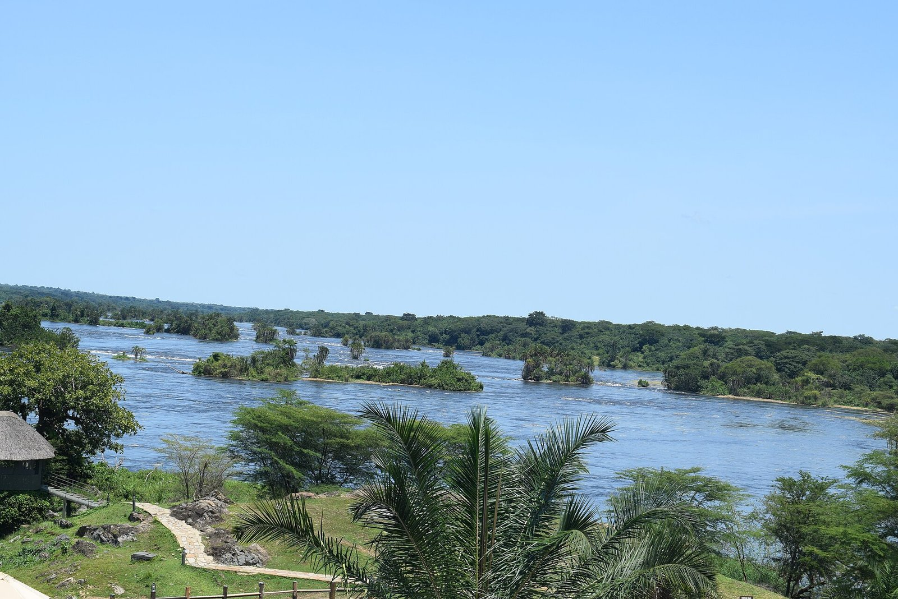
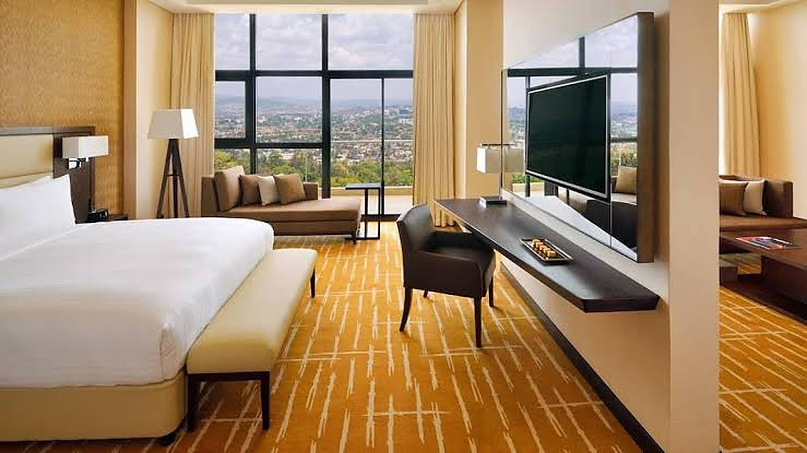
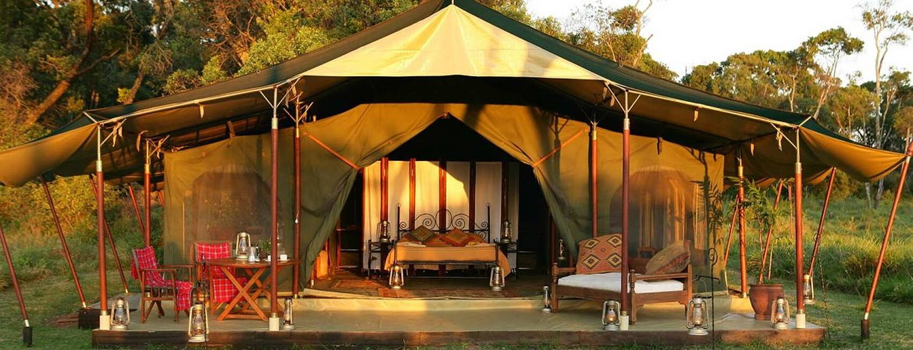

One long-form piece, most weeks: a sourced, on-the-record argument about what's actually changing in East African hospitality — not a news digest. Written in continuous narrative, in the register of the FT Big Read: named sources, verbatim quotes, primary data, and a confidence grade on every claim that needs one. Reviewed by the editor before it runs.
AFCON 2027 will be priced, not filled
CAF told Uganda this week that its rooms problem lies upcountry. America's World Cup, whose hotel results landed the same day, suggests the bigger risk for Nairobi, Kampala and Dar es Salaam is the opposite one: hotels that price out the guests they already have.
East Africa's hotels no longer set the price of their own staff
A parliamentary committee in Mombasa spent this year clearing paperwork so more Kenyan hospitality workers can join cruise ships. A tourism week in Eldoret is training the ones who stay. The wage that decides which of those two things happens is being set somewhere else entirely.

From Sunday, Europe stops taking East Africa's lodges at their word
On 27 September an EU consumer law makes "eco", "green" and offset-based "carbon neutral" unusable without proof. No East African lodge is under EU jurisdiction. Those that sell through European tour operators are about to discover that they do not need to be.

East Africa is building rooms faster than it is selling 2027
Nearly 80% of Kenya's hotel pipeline is already concrete, which means it opens whether or not the demand arrives. Last week the 2027 European contracting season opened in Paris, and the Indian Ocean island that turned up was not ours.
Kenya's tourism sector just broke a revenue record. Its own tourists couldn't afford to be part of it.
Kenya's tourism earnings hit a record Sh564 billion this year while domestic bed-nights missed target by 600,000, and Rwanda is reporting the same split. For East African operators, the strategy that grows the top line is not the base that fills the shoulder season.

Kenya's grid got cheaper. Leaving it got harder. Both happened in the same week.
The regulator cut September's electricity pass-through by 54 cents a unit and, in a separate notice days later, halved the credit for power that hotels and lodges push back into the grid. Read together, they are not two notices. They are one policy.

Kenya built its quality marks by going door to door. The new rules put a price on them.
Legal Notice 127 gives hotels a nine-rung licence ladder, then charges every enterprise the same KSh 250,000 for classification and KSh 100,000 for accreditation. Half the establishments already holding a quality mark have fewer than 36 rooms.
East Africa's route map is being rebuilt. The fares are set somewhere else.
Four new services in eleven weeks will stitch the region together more tightly than a decade of open-skies communiqués managed. Buyers are signing 2027 rates against flights that have not yet flown a single season.

Africa's hotels adopted AI first. Now comes the hard part.
Hotel chains across Kenya, Rwanda and Tanzania have integrated artificial intelligence faster than any region on earth. The industry's own data suggests that was the easy part.